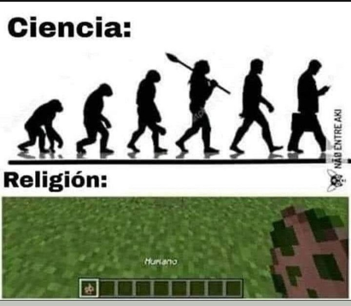
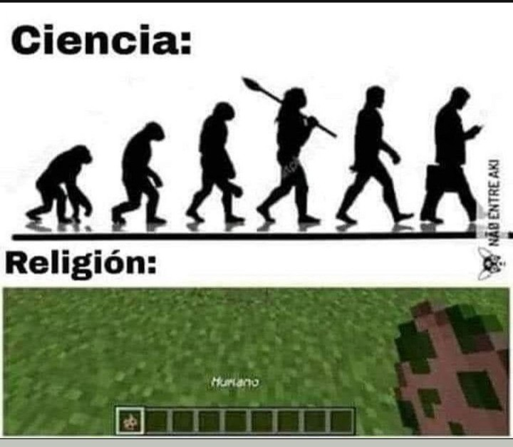

-
Que es RgLibrary?
- Una librería web con juegos gratis, páginas para pasar el rato, programas, juegos para Android, libros, fondos de pantalla, etc.
- Portal 1 - Descargar

Videojuego de lógica en primera persona para un solo jugador desarrollado por Valve Corporation
Requisitos del sistema:
· Procesador a 1.7 GHz
· 512 MB de RAM
· Gráfica compatible con DirectX® 8.1
· Windows® 7 (32 y 64 bits) / Vista / XP - Fallout 1 - Descargar

Videojuego de rol (RPG) un jugador desarrollado por Black Isle Studios, Interplay Entertainment
Requisitos del sistema:
· SO: Windows
· Procesador: Pentium 90 MHz o más rápido
· Memoria: 16 MB de RAM.
· Gráficos: SVGA
· Versión de DirectX®: Cualquiera
· Disco duro: 565 MB de espacio libre - FarCry 1 - Descargar
Far Cry es un videojuego de disparos en primera persona de la compañía de videojuegos Crytek
Requisitos del sistema:
· SO: Windows 2000 / XP
· Procesador: AMD Athlon o Pentium III
· Memoria: 256 MB de RAM
· Gráficos: Gráfica con 64 MB compatible con DirectX 9.0b
· Sonido: Dispositivo de sonido PCI - Max payne 1 - Descargar

Max Payne es un videojuego de disparos en tercera persona y entorno 3D desarrollado para Microsoft Windows por la empresa finlandesa Remedy
Requisitos del sistema:
· SO: Microsoft® Windows® 2000 / XP
· Procesador: AMD / Intel a 450 MHz
· Memoria: 96 MB de RAM
· Gráficos: Tarjeta gráfica con 16 MB y compatible con Direct3D
· Versión de DirectX: DirectX 8.0 - Call of duty 1 - Descargar

Call of Duty es un videojuego de disparos en primera persona de tipo bélico desarrollado por Infinity Ward
Requisitos del sistema:
· SO: Windows 2000/XP
· Procesador: Pentium III a 600 MHz o Athlon a 600 MHz o superior
· Memoria: 128 MB de RAM
· Disco duro: 1,4 GB de espacio libre - Mafia 1 - Descargar

Mafia es un videojuego de acción y aventuras desarrollado por Hangar 13
Requisitos del sistema:
· SO: Windows 10 64-bit
· Procesador: Intel Core-i5 2550K 3.4GHz / AMD FX 8120 3.1 GHz
· Memoria: 6 GB de RAM
· Gráficos: NVIDIA GeForce GTX 660 / AMD Radeon HD 7870
· DirectX: Versión 11
· Disco duro: 50 GB de espacio disponible - Mafia 2 - Descargar
Mafia II es un videojuego de acción en tercera persona desarrollado por 2K Games. Es la continuación de la primera entrega Mafia
Requisitos del sistema:
· SO: Microsoft Windows XP / Windows Vista / Windows 7
· Procesador: Pentium D a 3 GHz o AMD Athlon 64 X2 3600+ (Dual core) o superior
· Memoria: 1.5 GB de RAM
· Gráficos: nVidia GeForce 9800 GTX / ATI Radeon HD 3870 o mejor
· Disco duro: 8 GB de espacio disponible - UltraKill - Descargar
Ultrakill es un videojuego de disparos en primera persona desarrollado por Arsi Patala
Requisitos del sistema:
· SO: Windows 7 64-bit or later
· Procesador: 2.4GHZ Dual Core Processor Or Higher
· Memoria: 2 GB de RAM
· Gráficos: GeForce 9800GT Or Equivalent
· DirectX: Versión 9.0
· Disco duro: 2 GB de espacio disponible - Counter-Strike1.6 - Descargar

Counter-Strike es un videojuego de disparos en primera persona multijugador desarrollado por Valve
Requisitos del sistema:
· SO: Windows 98/ME/NT/2000/XP
· Procesador: Pentium II 300 MHz
· Memoria: 96 MB de RAM
· Tarjeta gráfica de 16 MB
· Disco duro: 600 MB de espacio libre en el disco duro - Half-life - Descargar

Half-Life es un videojuego del género de disparos en primera persona que fue desarrollado por la empresa Valve
Requisitos del sistema:
· SO: Windows 7, Vista, XP
· Procesador: 1.7 Ghz
· Memoria: 512 MB de RAM
· Gráficos: DirectX 8.1 level Graphics Card (requires support for SSE)
· Disco duro: 6500 MB de espacio disponible - Area 51 - Descargar

Area 51 es un videojuego de disparos en primera persona desarrollado por Midway Games
Requisitos del sistema:
· Procesador: 1.4 GHz
· Memoria: 256 MB
· Disco duro: 3 GB
· Tarjeta grafica: Gforce 3 / Radeon 64 MB - Undertale - Descargar

Undertale es un videojuego de rol en 2D de 2015 creado por el desarrollador independiente estadounidense Toby Fox
Requisitos del sistema:
· SO: Windows XP, Vista, 7, o 10
· Memoria: 2 GB RAM
· Tarjeta gráfica: 128MB
· Disco duro: 200 MB espacio disponible - X-men origins wolverine - Descargar

X-Men Origins: Wolverine es un videojuego de acción-aventura y Hack and slash desarrollado por Raven Software y Griptonite Games
Requisitos del sistema:
· SO: Windows XP SP2/Vista SP1
· Procesador: Intel Pentiium 4 @ 3 GHz / AMD Athlon64 3000+
· Memoria: 1 GB
· Tarjeta gráfica: 256 MB, nVidia GeForce 7800 GT / ATI Radeon X1800
· Disco duro: 8 GB libres
· DirectX: 9.0c - Clustertruck - Descargar

Ábrete paso saltando a través de niveles locos en un juego de "el suelo es lava" encima de camiones a toda velocidad conducidos por conductores terribles desarollado por Landfall
Requisitos del sistema:
· SO: Windows 7
· Procesador: 2Ghz
· Memoria: 2 GB de RAM
· DirectX: Versión 9.0
· Disco duro: 300 MB de espacio disponible - Cuphead - Descargar

Cuphead es un videojuego perteneciente al género de corre y dispara, desarrollado por StudioMDHR
Requisitos del sistema:
· SO: Windows 7
· Procesador: Intel Core2 Duo E8400, 3.0GHz or AMD Athlon 64 X2 6000+, 3.0GHz or higher
· Memoria: 3 GB de RAM
· Gráficos: Geforce 9600 GT or AMD HD 3870 512MB or higher
· DirectX: Versión 11
· Disco duro: 4 GB de espacio disponible - Secret Neighbor - Descargar

Secret Neighbor es un juego multijugador de terror social en auge ambientado en el universo de Hello Neighbor desarrolado por Hologryph, Eerie Guest Studios
Requisitos del sistema:
· SO: Windows 7 y up
· Procesador: i5 y up
· Memoria: 6 GB de RAM
· Gráficos: GTX 770 y up
· Versión de DirectX: Versión 12 - Hello Neighbor 1 - Descargar

Hello Neighbor es un videojuego de terror independiente del género de sigilo desarrollado por Dynamic Pixels
Requisitos del sistema:
· SO: Windows 7 and up
· Procesador: i5 and up
· Memoria: 6 GB de RAM
· Gráficos: GTX 770 and up
· DirectX: Versión 11
· Disco duro: 5 GB de espacio disponible - Hello Neighbor 2 - Descargar

Hello Neighbor 2 es un juego de terror sigiloso que consiste en descubrir los secretos de tu extraño vecino desarrollado por Dynamic Pixels
Requisitos del sistema:
· SO: Windows 10
· Procesador: i5 or better
· Memoria: 6 GB de RAM
· Gráficos: GTX 770 and up
· DirectX: Versión 11
· Disco duro: 4 GB de espacio disponible - Five Nights at Freddys 1 - Descargar

Five Nights at Freddy's es un videojuego de supervivencia de terror desarrollado y publicado por Scott Cawthon
Requisitos del sistema:
· SO: XP,Vista,Windows7
· Procesador: 2 GHz Intel Pentium 4 or AMD Athlon or equivalent
· Memoria: 1 GB de RAM
· Gráficos: 1 GB
· DirectX: Versión 9.0
· Disco duro: 250 MB de espacio disponible - Five Nights at Freddys 4 - Descargar

Five Nights at Freddy's 4 es un videojuego de terror donde asumimos el papel de un niño que debe sobrevivir a sus terrores nocturnos con los animatronicos nigthmare desarollado por Scott Cawthon y Scottgames
Requisitos del sistema:
· SO: Win XP, 7, 8, Vista, 10
· Procesador: 2 GHz Intel Pentium 4 or AMD Athlon or equivalent
· Memoria: 2 GB de RAM
· Disco duro: 1 GB de espacio disponible - Five Nights at Freddys 5 - Descargar

Five Nights at Freddy's: Sister Location es un videojuego de terror desarrollado y publicado por Scott
Requisitos del sistema:
· SO: Win XP, 7, 8, Vista, 10
· Procesador: 2 GHz Intel Pentium 4 ó AMD Athlon ó equivalente
· Memoria: 1 GB de RAM
· Disco duro: 1 GB de espacio disponible - Five Night at Freddys UCN - Descargar

Ultimate Custom Night es un videojuego de terror desarrollado y publicado por Scott Cawthon
Requisitos del sistema:
· SO: Win XP, 7, 8, Vista, 10
· Procesador: 2 GHz Intel Pentium 4 or AMD Athlon or equivalent
· Memoria: 2 GB de RAM
· Gráficos: 1 GB
· Disco duro: 500 MB de espacio disponible - Phasmophobia - Descargar

Phasmophobia es un videojuego de terror independiente desarrollado y publicado por Kinetic
Requisitos del sistema:
· SO: Windows 10 64Bit
· Procesador: Intel Core i5-10600 / AMD Ryzen 5 3600
· Memoria: 8 GB de RAM
· Gráficos: NVIDIA RTX 2060 / AMD Radeon RX 5700
· Disco duro: 21 GB de espacio disponible - SCP: Containment Breach - Descargar

SCP: Containment Breach es un videojuego de terror independiente desarrollado por Joonas Rikkonen
Requisitos del sistema:
· SO: Windows XP, Vista, 7, 8, 10, 11
· Procesador: Intel Pentium E2160 / AMD C-50 1ghz, 1 core
· Memoria: 4 GB de RAM
· Gráficos: NVIDIA Geforce GT 9600 / AMD RADEON 6250HD
· DirectX: Versión 7.0
· Disco duro: 500 MB de espacio disponible - Poppy Playtime - Descargar

Poppy Playtime es un videojuego de terror y puzzles desarrollado y publicado por el desarrollador independiente MOB Games
Requisitos del sistema:
· SO: Windows 10
· Procesador: Intel Core i5
· Memoria: 8 GB de RAM
· Gráficos: Nvidia GeForce GTX 1060 / Radeon RX 580
· Disco duro: 20 GB de espacio disponible - ARK: Survival Evolved - Descargar
Ark: Survival Evolved es un videojuego de acción-aventura y supervivencia desarrollado por Studio Wildcard
Requisitos del sistema:
· SO: Windows 7/8.1/10
· Procesador: Intel Core i5-2400/AMD FX-8320 o mejor
· Memoria: 8 GB de RAM
· Gráficos: NVIDIA GTX 670 2 GB/AMD Radeon HD 7870 2 GB o mejor
· DirectX: Versión 10
· Disco duro: 60 GB de espacio disponible - Stranded Deep - Descargar

Stranded Deep es un vídeo juego de supervivencia, primera persona desarrollado por el estudio australiano Beam Team Games
Requisitos del sistema:
· SO: Windows Vista o superior
· Procesador: 1.8GHz Intel dual-core y above
· Memoria: 2 GB RAM
· Tarjeta gráfica: Intel HD5000 con Mínimos 512MB VRAM
· DirectX: Versión 9.0c
· Disco duro: 1 GB espacio disponible - Terraria - Descargar

Terraria es un videojuego de acción, aventura y de sandbox desarrollado de forma independiente por el estudio Re-Logic
Requisitos del sistema:
· SO: Windows XP / Vista / 7
· Procesador: 1.6 GHz
· Memoria: 512 MB de RAM
· Gráficos: Shader Model 1.1 con 128 MB de VRAM
· DirectX: 9.0c o posterior
· Disco duro: 200 MB de espacio libre - Project Zomboid - Descargar

Project Zomboid es un videojuego de terror de supervivencia isométrico de mundo abierto desarrollado por el desarrollador independiente The Indie Stone
Requisitos del sistema:
· SO: Windows 10, 64 Bit OS required
· Procesador: Intel 2.77GHz Quad-core
· Memoria: 8Gb Ram
· Hard Disk Space: 5gig
· Video Card: Dedicated graphics card with 2 GB of RAM minimum, OpenGL 2.1 and GLSL 1.2 support (generally 2012 or newer) - Green Hell - Descargar
Green Hell es un videojuego de supervivencia desarrollado por Creepy Jar
Requisitos del sistema:
· SO: Windows 7/8/10 64-bit
· Procesador: 3.2 GHz Dual Core Procesador
· Memoria: 4 GB de RAM
· Gráficos: GeForce GTX 660, Radeon RX 460 o equivalente con 2 GB de video RAM
· DirectX: Versión 11
· Disco duro: 8 GB de espacio disponible - Minecraft - Descargar

Minecraft es un videojuego de construcción de tipo mundo abierto desarrollado por Mojang Studios
Requisitos del sistema:
· Procesador: Intel Core i3-3210 3.2 GHz / AMD A8-7600 APU 3.1 GHz o equivalente
· Memoria: 2GB de RAM
· Tarjeta gráfica: Intel GMA 950 o su equivalente en AMD
· Disco duro: Por lo menos 200 MB - Resident Evil 4 - Descargar

Resident Evil 4, es un videojuego de disparos en tercera persona de estilo terror y supervivencia desarrollado por Capcom Production Studio 4
Requisitos del sistema:
· SO: Windows® 8 / Windows® 10
· Procesador: Intel® CoreTM2 Duo 2,4 GHz o superior, AMD AthlonTM X2 2,8 GHz o superior
· Memoria: 2 GB de RAM
· Gráficos: NVIDIA® GeForce® 8800GTS o superior, ATI RadeonTM HD 4850 o superior
· DirectX: Versión 9.0c
· Disco duro: 15 GB de espacio disponible - Internet Cafe Simulator 1 - Descargar

Internet Cafe Simulator es un juego de simulación de negocios de cibercafés desarollado por Cheesecake Dev
Requisitos del sistema:
· SO: Windows 10
· Procesador: 2.5 GHz Dual Core CPU
· Memoria: 4 GB de RAM
· Gráficos: Geforce GTX 970/Radeon RX470 or better
· Disco duro: 5 GB de espacio disponible - Internet cafe simulator 2 - Descargar

Internet Cafe Simulator 2 es un juego de simulación de negocios de cibercafé extremadamente completo y detallado desarollado por Cheesecake Dev
Requisitos del sistema:
· SO: Windows 10
· Procesador: 2.5 GHz Dual Core CPU
· Memoria: 6 GB de RAM
· Gráficos: Geforce GTX 970/Radeon RX470 or better
· Disco duro: 7 GB de espacio disponible - Streamer Life Simulator - Descargar

Streamer Life Simulator es un juego de simulación de vida de streamer muy completo. Sea el streamer más popular del mundo desarollado por Cheesecake Dev
Requisitos del sistema:
· SO: Windows 7
· Procesador: 2 GHz Dual Core CPU
· Memoria: 4 GB de RAM
· Gráficos: Intel HD Graphics 4000 or better
· Disco duro: 5 GB de espacio disponible - Contra - Descargar

Contra es un videojuego de matamarcianos desarrollado y publicado por Konami
Requisitos del sistema:
· Desconocido - Mortal Kombat 3 Ultimate - Descargar

Mortal Kombat 3 Ultimate es un videojuego de lucha desarrollado y publicado por Midway
Requisitos del sistema:
· Desconocido - PepsiMan - Descargar

Pepsiman, es un videojuego de acción desarrollado y distribuido por Kindle Imagine Develop
Requisitos del sistema:
· Desconocido - Crash Bandicoot - Descargar

Crash Bandicoot es un videojuego de plataformas desarrollado por Naughty Dog
Requisitos del sistema:
· Desconocido - Terrordrome - Descargar
Terrordrome es un videojuego de peleas con personajes de terror desarrollado por Huracan Studio
Requisitos del sistema:
· Desconocido - Poly Bridge 1 - Descargar

Poly Bridge es un juego de lógica y simulación de construcción de puentes, desarrollado por el estudio independiente, con sede en Nueva Zelanda, Dry Cactus
Requisitos del sistema:
· SO: Windows 7
· Procesador: 1GHz
· Memoria: 2 GB de RAM
· Gráficos: 512Mb
· DirectX: Versión 9.0
· Disco duro: 150 MB de espacio disponible - Poly Bridge 2 - Descargar

Poly Bridge 2 es un juego de lógica de simulación, secuela de Poly Bridge. El juego está desarrollado y publicado por Dry Cactus
Requisitos del sistema:
· SO: Windows 10
· Procesador: 1GHz
· Memoria: 4 GB
· Disco duro: 500 MB de espacio disponible - Getting Over It with Bennett Foddy - Descargar
Getting Over It with Bennett Foddy, comúnmente abreviado como Getting Over It, es un videojuego desarrollado por el creador de QWOP Bennett Foddy
Requisitos del sistema:
· SO: Windows Vista
· Procesador: 2 GHz Dual Core CPU
· Memoria: 2 GB de RAM
· Gráficos: Intel HD Graphics 4000 or better
· DirectX: Versión 11
· Disco duro: 2 GB de espacio disponible - Passpartout - Descargar
:no_upscale()/cdn.vox-cdn.com/uploads/chorus_image/image/55843625/passpartout_1.0.gif)
Passpartout te pone en los zapatos de un artista francés que pinta y vende tus propias obras de arte para sobrevivir desarollado por Flamebait Games
Requisitos del sistema:
· SO: Windows 7 or later
· Procesador: Intel Core i3 or equivalent
· Memoria: 1 GB de RAM
· Gráficos: GeForce GTX 460 or Radeon HD 6850
· DirectX: Versión 9.0c
· Disco duro: 2 GB de espacio disponible - Friday Night Funkin - Descargar

Friday Night Funkin' es un videojuego de ritmo desarollado por ninjamuffin99, Newgrounds, Inc.
Requisitos del sistema:
· SO: 64 bits Windows 10
· Procesador: quad core Intel R core TM i5 – 2450 M
· Memoria: 8 GB de RAM
· Gráficos: NVIDIA GeForce GT 555M
· Disco duro: 800 MB de espacio disponible - Age of mythology - Descargar

Age of Mythology es un videojuego de estrategia en tiempo real para computadoras personales, desarrollado por Ensemble Studios
Requisitos del sistema:
· SO: Windows Vista, 7, 8.1+
· Procesador: 1.6 Ghz
· Memoria: 1 GB de RAM
· Gráficos: Direct X 10+ Capable GPU
· DirectX: Versión 10
· Disco duro: 3 GB de espacio disponible - People Playground - Descargar

Dispara, apuñala, quema, envenena, desgarra, vaporiza o aplasta muñecos de trapo en un gran espacio abierto desarrollado por mestiez
Requisitos del sistema:
· SO: Windows 7 SP2+
· Procesador: 2 GHz
· Memoria: 4 GB de RAM
· Gráficos: Graphics card with DX10 (shader model 4.0) capabilities
· DirectX: Versión 10
· Disco duro: 350 MB de espacio disponible - Ultimate Chicken Horse - Descargar

Ultimate Chicken Horse es un videojuego multijugador y cooperativo de plataformas desarrollado por Clever Endeavour
Requisitos del sistema:
· SO: Windows 7 or later
· Procesador: 1.5GHZ +
· Memoria: 2 GB de RAM
· Gráficos: 512 MB VRAM Intel HD 4000 / GeForce 200 Series / Radeon HD 4000 Series
· DirectX: Versión 9.0c
· Disco duro: 2 GB de espacio disponible - Teardown - Descargar

Teardown es un sandbox, rompecabezas y juego de acción desarrollado por Tuxedo Labs
Requisitos del sistema:
· SO: Windows 7
· Procesador: Quad Core CPU
· Memoria: 4 GB de RAM
· Gráficos: NVIDIA GeForce GTX 1060 or similar. 3 Gb VRAM
· Disco duro: 4 GB de espacio disponible - PokeMMO - Descargar

PokéMMO es un MMO gratuito no oficial de Pokémon. Es una versión multijugador de Pokémon Blanco/Negro aunque también acepta ROMS de otros juegos
Requisitos del sistema:
· Desconocido - WinRAR - Descomprimidor de archivos
- Autoclicker - Autoclicker
- Desktop goose - Ganso mascota de escritorio
- Twitch studio - Programa para streams
- Avast antivirus - Antivirus
- Livesplit - Contador para speedruns
- Idle master extended - Farmer de cromos de steam
- Shotcut - Editor de videos
- Raze cortex - Optimizar juegos
- Super Mario - Descargar
- Pac-Man - Descargar
- Tetris - Descargar
- Duck Hunt - Descargar
- Legend of Zelda - Descargar
- Contra - Descargar
- Mortal Kombat 3 - Descargar
- Mortal Kombat 4 - Descargar
- Chip 'n Dale Rescue Rangers 2 - Descargar
- Galaga - Descargar
- Donkey Kong Classics - Descargar
- Spider-Man - Descargar
- Captain Commando - Descargar
- Cadillacs And Dinosaurs - Descargar
- Street Fighter 1 - Descargar
- Street Fighter 2 - Descargar
- Street Fighter 3 - Descargar
- PCSX2 - Descargar
- God of War 1 - Descargar
- Bios ps2 - Descargar
- Minecraft ultima version - Descargar
- Geometry Dash con mod menu - Descargar
- Undertale - Descargar - Game Keyboard
- Friday Night Funkin - Descargar
- Clash mini - Descargar
- Super Mario bros - Descargar
- Angry birds space - Descargar
- Kick the Buddy remastered - Descargar
- Fruit ninja classic - Descargar
- Poly bridge - Descargar
- Doom - Descargar
- Incredibox - Descargar
- Pou mod - Descargar
- Plantas vs zombies con hacks - Descargar
- Subway surfers - Descargar
- Brawl Stars server privado - Descargar
- Clash royale server privado - Descargar
- Clash of clans server privado - Descargar
- Saga completa de harry potter - Descargar
- El señor de los anillos - Descargar
- Coraline y la puerta secreta - Descargar
- El principito - Descargar
- La divina comedia - Descargar
- La isla del tesoro - Descargar
- Viaje al centro de la tierra - Descargar
- Las aventuras de Sherlock Holmes - Descargar
- Vuelta al mundo en 80 dias - Descargar
- Online Tone Generator - Test de Hertz
- The true size - El tamaño real de los paises
- PiliApp - Copia emojis hechos con símbolos
- Dafont - Página con fuentes de texto
- Timenow - Que hora es en cada país
- Generator qr - Genera un código QR
- Random wheel - Crea una ruleta con tus opciones
- Speaktogo - Busca una ubicación con tu voz
- Neal.fun - Barras de cuanto falta para tal cosa
- Is it christmas? - Esta pagina te dice si es navidad
- Flightrador24 - Todos los vuelos del mundo a tiempo real
- Internetlivestats - Estadísticas de internet
- RickyMortylatino - Todos los episodios de Rick Y Morty
- Simpsonizados - Todos los episodios de Los Simpson
- Malcomlatino - Todos los episodios de Malcom in the middle
- Bouncy balls - Rebota bolitas
- Civinext - Ballena que sigue el mouse
- Body visualizer - Crea un tipo de cuerpo a tu gusto
- Pointer pointer - Siempre habrá una foto señalando ahí
- Dinosaurpictures - Como se veía la tierra con el tiempo
- In2white - La imagen con mayor resolución del mundo
- Pixels fighting - Pelea de pixeles
- Koalastothemax - Haz un koala con píxeles
- David.li - Personajes con físicas raras
- Cat bounce - Haz rebotar gatos
- Biglongnow - Puertas infinitas
- Eslslap - Golpea a un hombre con una anguila
- Voxel cpace - Explora mapas con un dron
- Mrdoob - Pon cubos en lugares random
- FakeYou - Usa la voz de un personaje para decir lo que quieras
- Mrdoob - Dibuja con gente random
- Plink.in - Crea música con personas
- Bongo cat - Bongo cat
- Radio garden - Radios de todo el mundo
- Tinkercad - Página para hacer diseños 3D
- Incredibox - Crea canciones mezclando sonidos
- Autodraw - Dibuja algo y se te transformará en algo real
- Tholman - Dibuja con letras
- Voice changer - Cambiador de voz
- Weavesilk - Siéntete un artista
- Touchpianist - Toca el piano como el mejor
- Musiclab - Crea ritmos
- Neal.fun - Dibuja logos con la memoria
- Webamp - Simulador de DJ
- Cat trap game - Encierra al gato
- Neal.fun - Gasta el dinero de Bill Gates
- Gif party - GIFs que bailan
- Powerline.io - Destroza a tus rivales con líneas
- Diep.io - Juego de tanques
- Geektyper - Simula que eres un hacker
- Kickassapp - Nave destructora de páginas
- EmuOS - Windows con juegos
- Astroe.io - Maneja tu propia nave espacial
- Shootup.io - Defiéndete de los zombies
- Smashkarts.io - Destroza a tus enemigos en carros
- Zlap.io - Tala árboles y sobrevive
- Humanbenchmark - Practica tus reflejos
- Momoo.io - Ataca con una bola y hazte más grande
- Findtheinvisiblecow - Encuentra la vaca invisible
- Lorzd.io - Organiza tú ejército de caballeros
- Sliher.io - Come a los otros gusanos
- Ducklings - Juego de patos
- Classic minecraft - Juega Minecraft clásico sin descargar nada
- Gota.io - Devora a los demás
- Wings.io - Vuela tu propio avión
- Shell shockers - Shooter de Huevos
- Venge.io - Juego de disparos estilo 3D
- Run3 - Corre y esquiva los obstáculos
- Skribbl.io - Dibuja y adivina estilo pinturillo
- Cookie clicker - Clickea galletas
- Idiottest - Test de idiotas
- Pinturillo2 - Pinturillo
- Krunker.io - Shooter estilo Counter-Strike
- Bartender The Right Mix - Mezcla bebidas
- Intrusion - Juego de disparos 2D
- Crossy road - Cruza la calle
- Zombotron - Juego de zombies
- Zombsroyale.io - Battle Royale
- Higher lower - Más buscado o menos buscado
- Agar.io - Consigue el circulo mas grande
- Samurai showdown - Juego de samuráis
- Fist of Awesome - Juego de peleas contra animales
- Littlealchemy2 - Combina elementos
- 1v1.lol - Combates estilo Fortnite
- Natias.ma - Confia en mi.
- pnrtscr - El screamer
- Yyyyyyy.info - Página random bizarra
- Xtrafondos - Fondos de pantalla
- Unsplash - Fondos de pantalla
- Pixabay - Fondos de pantalla
- Depositphotos - Fondos de pantalla
- Alphacoders - Fondos de pantalla
- Fondosmil - Fondos de pantalla
- Wallpaperuse - Fondos de pantalla
- Wallpaperbetter - Fondos de pantalla
- Todofondos - Fondos de pantalla
Giann#5941
Todos los juegos fueron analizados con antivirus, cualquier duda o problema por Discord:
Para descubrir todas las categorias de la pagina se recomienda entrar desde PC
Juegos gratuitos PC:
Juegos de accion y aventura


Juegos de terror
Juegos de supervivencia


Juegos de simulacion
Juegos arcade

Juegos Casuales

Programas PC:
ROMS:
NES
MAME
PS2
Android:
Libros:
Páginas webs:
Páginas utiles-datos
Páginas visuales-satisfactorias
Páginas de dibujo-audiovisuales
Páginas web con juegos
Páginas extras
Fondos de pantalla:
Memes:
 
